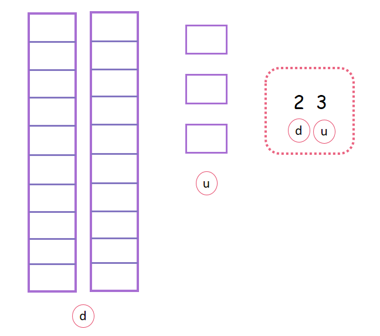

Unidades y Decenas
Parte 2- Continúamos
Representación y descomposición de números de dos cifras
Todos los números pueden ser descompuestos (esto quiere decir separados en partes) o representados a través de diferentes instrumentos como el ábaco o las regletas. Representar los números nos sirve para tener conciencia del valor de cada cifra.
- ¿Qué aprenderemos en esta segunda parte?
- Representación en el ábaco
- Representación con regletas
(1)Representación de números con decenas usando el ábaco:
El ábaco es un instrumento de conteo que nos sirve para realizar algunas operaciones como la suma y también para identificar el valor de cada cifra del número que estamos representando.
Observa:Este es un ábaco y como puedes ver tiene dos casillas: una para las unidades y otra para las decenas. En un ábaco como este solo vamos a tener dos casillas porque vamos a ubicar solo números de 1 o 2 cifras.
Observa:Observa que el número que tenemos es 8, es un número que está solito, no viene acompañado de otro número por lo tanto pertenece a la casilla de las unidades, para representarlo en el ábaco solo debes dibujar en número de rayitas que te indica el número en la casilla correspondiente.
Observemos ahora cómo representamos un número con dos cifras:
Recuerda que el primer número siempre va en las unidades y el segundo número en las decenas. Como el primer número es 5, dibujamos 5 rayitas en la casilla de las unidades y como las decenas son 1, dibujamos 1 rayita en la casilla de las decenas. Así lo puedes hacer con todos los números que tengan dos cifras.
Observa:(2)Representación de números con decenas usando regletas:
Las regletas son otro instrumento para representar los número y para contar, con ellas también podemos hacer operaciones básicas. Usar las regletas te permitirá aprender a reconocer cuánto vale un número cuando ocupe la casilla de las decenas o de las unidades.
Observa:
“Tip: Recuerda que las decenas son grupos de 10.
Observemos ahora cómo representamos un número con regletas, es muy fácil:
Como nos muestra la imagen, las decenas que son 1, tienen una barrita que agrupa a 10 unidades, y las unidades que son 1, tienen un solo cuadrito. Lo puedes hacer de esta forma usando barras y cubos para representar números de 2 cifras.
Observa:
¿Has visto qué fácil es? solo tienes que observar el número de las unidades y dibujar tantos cuadritos como este número te indica y después observar el número de las decenas y dibujar tantas barritas como te indique este número.
Material extra para trabajar el tema de representación de números con unidades y decenas:
En este enlace podrás descargar una ficha de trabajo con regletas creada por Aprenderjuntos.cl.
En este enlace encuentras una variación del trabajo con decenas y unidades creado por Aprenderjuntos.cl.
En esta página en facebook podrás descargarte varias fichas de trabajo con regletas creadas por Mundo abc.
En este enlace encontrarás un juego interactivo sobre el uso de regletas creado por Aprenderjuntos.cl.
Vídeo orientativo::
En este enlace podrás ver el vídeo La decena: Aprender a sumar 10 de distintas formas creado por Aula 365-Los creadores.